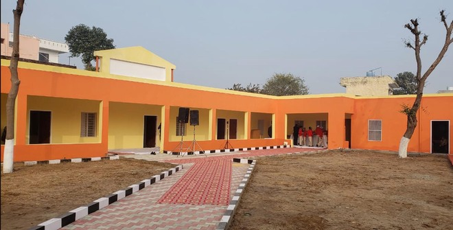

SCHOOL MANAGEMENT

Student Information System
MasterSoft's Students Management System Software is an efficient educational ERP software that simplifies the journey of faculty & educators right from the student enrollment phase to the day they become Alumni by managing their complete information & helping institutions make insightful decisions!
Lead Management
Enhance the quality of your leads with a centralized platform built for education and prevent any lead duplication & leakage caused due to handling leads via spreadsheets. Manage & distribute quality leads, verify them, and prioritize engagement through the admission funnel by communication via various channels - SMS, Calls, Emails, etc.
Registration & Admission
Get hassle-free registration & admission of students with in-built course registration and scheduling features. Effectively manage online admission, student enrollment, fees, merit list, attendance, scholarship, etc. Highly Configurable System with Provisions of Customization. Equipped with Powerful BI Tools, for Data Analysis and Decision Support
Fee Collection
Collect Fees Online, Offline; system supports integration with Wallets, Gateways and Banks. With Payment Reconciliation feature, track day-to-day fees-related transactions through cross-check methodology. Highly Flexible system with provisions to adopt various Fee Collection Patterns.Trusted by 2,000+ Institutions across India.
Student Records
Get a holistic 360° view of the students and store large amounts of data without affecting its functioning. Track & monitor regular activities of the students - Attendance, exam scores, behavior, overall student performance, etc. with a role-based login, which can be accessed by students, teachers, parents, and admin.
Learning Management System

With easy-to-use virtual classroom setup, improve teacher-student collaboration - Assignments, Quiz, Teaching - Learning Schedules, E-Library. Improve student learning outcomes with personalized student learning management systems. Create multiple question sets- Descriptive & MCQ tests and conduct cheat-free online assessments.
Exam & Results

Conduct exams online / offline with the support of a Strong Pre - Exam Activities Automation Engine and Robust Online Proctored Exam Conduction Software - an easy-to-use & integrated platform enabling various levels of permission & encryption for users with role-based access. Configure your exams for various courses and any type of assessment, thus making it flexible.